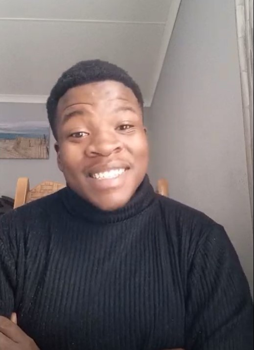

Tumisang Msiza | WDD 130
I'm Tumisang Msiza from South Africa, and I'm thrilled to join this class. With an associate degree in multimedia graphic design, I've created designs for companies like Raising Stars Academy and Tulesi Consulting Engineers. Beyond my graphic design passion, I'm captivated by animation, enjoying the process of bringing characters to life through motion. My interest in animation sparked my curiosity about its technical aspects, leading me to explore software development. The idea of not only crafting visually appealing animations but also understanding the underlying code fascinated me. This intersection of artistic creativity and logical problem-solving aligns perfectly with my diverse interests. I've always loved creating and making things, whether through visually stunning animations or elegantly coded software solutions. This class, I believe, will further expand my skills, allowing me to contribute to innovative projects at the crossroads of technology and design. Excited about the possibilities ahead, I look forward to learning and collaborating with fellow enthusiasts in this dynamic field.